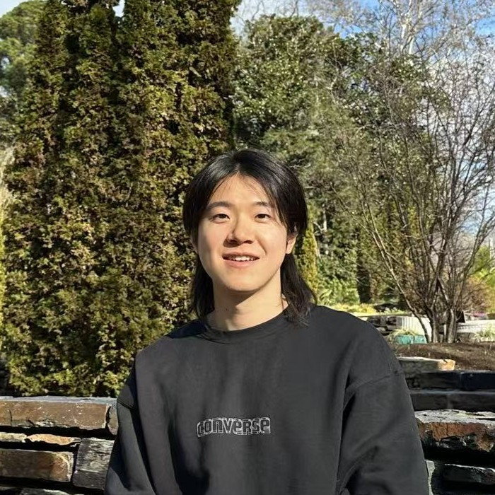

Feng Zhu
PhD Candidate
Email: fzhu5@ncsu.edu |
 |
I am a PhD candidate in Electrical and Computer Engineering at North Carolina State University, co-advised by Prof. Aritra Mitra and Prof. Robert W. Heath Jr.. My research focuses on federated reinforcement learning, distributed optimization, and multi-agent systems, with an emphasis on sample efficiency and high-probability guarantees. I am interested in developing provably efficient algorithms for large-scale multi-agent learning systems.
Qualcomm Inc., Machine Learning Engineer Intern (May–Aug 2024)
Worked on Transformer-based channel prediction for wireless systems. Developed GPU-based simulation pipelines using PyTorch and MATLAB, explored model scaling trade-offs, and demonstrated up to 1.7 dB performance gains over classical autoregressive (AR) models.
Deep Reinforcement Learning Algorithms from Scratch (PyTorch)
[GitHub]
Implemented and benchmarked modern RL algorithms including Q-Learning, DQN, REINFORCE, A2C, and PPO. Built a modular framework for training and evaluation across multiple environments (CartPole, LunarLander), with analysis of convergence and stability.
LLM Systems and Fine-Tuning (Hugging Face, PyTorch)
[GitHub]
Built end-to-end NLP pipelines using Transformer models, including inference, sequence handling, and tokenization. Fine-tuned pretrained models using Hugging Face Transformers with both Trainer API and custom training loops.
Achieving Fast Finite-Time Rates for Heterogeneous Federated Stochastic Approximation
Feng Zhu, R. W. Heath, A. Mitra
TMLR, 2026. [paper]
Finite-time guarantees for federated stochastic approximation under heterogeneity and Markovian sampling, with provable linear speedups and no heterogeneity bias.
Variance-Reduced Q-Learning over Static and Time-Varying Networks
S. Maity*, Feng Zhu*, A. Mitra, R. W. Heath
ACC, 2026. [paper]
Variance reduction improves sample efficiency in distributed Q-learning across networked agents.
Distributed Stochastic Approximation with Constant Communication
Feng Zhu, R. W. Heath, Aritra Mitra
IEEE Asilomar, 2025. [paper]
Communication-efficient stochastic approximation with provable convergence under constant communication rounds.
Towards Fast Rates for Federated and Multi-Task Reinforcement Learning
Feng Zhu, R. W. Heath, A. Mitra
IEEE CDC, 2024. [paper]
Accelerated learning in federated and multi-task RL with theoretical guarantees: linear speedups and no heterogeneity-induced bias.
STSyn: Speeding up Local SGD with Straggler-Tolerant Synchronization
Feng Zhu, J. Zhang, X. Wang
IEEE TSP, 2024. [paper]
Straggler-resilient synchronization for efficient distributed SGD.
Communication-Efficient Local SGD with Age-Based Worker Selection
Feng Zhu, J. Zhang, X. Wang
Journal of Supercomputing, 2023. [paper]
Proposes age-based worker selection to improve efficiency in communication-constrained distributed learning.
Adaptive Worker Grouping for Communication-Efficient and Straggler-Tolerant Distributed SGD
Feng Zhu, J. Zhang, O. Simeone, X. Wang
IEEE ISIT, 2022. [paper]
Introduces adaptive grouping strategies to improve communication efficiency and robustness in distributed SGD.
A Short and Unified Convergence Analysis of SAG, SAGA, and IAG
Feng Zhu, R. W. Heath, A. Mitra
ArXiv, 2026 (Submitted to ICML). [paper]
Unified high-probability analysis for classical variance-reduced optimization algorithms.
Variance-Reduced Federated Q-Learning with Constant Communication
Feng Zhu, R. W. Heath, A. Mitra
Submitted to TAC, 2026.
Combines variance reduction and communication-efficient design for federated RL.
One-Shot Clustering for Personalized Federated Policy Evaluation
Feng Zhu, R. W. Heath, A. Mitra
Submitted to TSP, 2026.
Clustering-based personalization for federated policy evaluation.
DRAG: Divergence-Based Adaptive Aggregation in Federated Learning on Non-IID Data
Feng Zhu, J. Zhang, S. Liu, X. Wang
ArXiv, 2023 (Submitted to IEEE TIFS). [paper]
Adaptive aggregation method for handling heterogeneity in federated learning.
Email: fzhu5@ncsu.edu